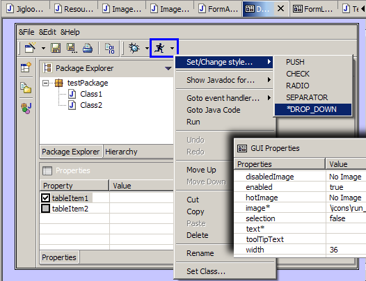
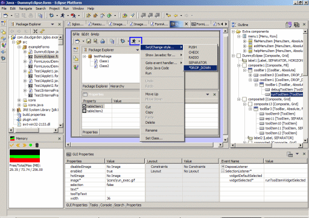

Jigloo GUI Builder
(Swing and SWT) for the
Eclipse and WebSphere IDEs
Current version: 2.0.1, released
Jan 7th 2004 (support for SWT Dialog, all features available for
non-commercial use, several bugs fixed, quick-set of properties on
creation of components, improved user-interface,
support for SWT on Macs).
Introduction
Note: Jigloo is free for
non-commercial use, but purchase of a Professional License is required
for commercial use.
Cloudgarden's
Jigloo GUI
Builder is
a plugin for IBM's Eclipse
Java IDE and WebSphere
Studio IDEs, which allows you
to build
and manage both Swing and SWT GUIs.
Jigloo
creates and
manages code
for
all the parts of the GUI as well as
code to handle events, and shows you the GUIs as
they are being built, allowing you to experiment with various
properties of controls/components as well as the more complex
features of the Swing GridBagLayout or SWT's FormLayout, for instance. Jigloo
is
straightforward, powerful
and easy
to use and can lead to a very large time-saving (over
hand-coding) for GUI
development and maintainance tasks. Also, because Jigloo
is integrated with the
Eclipse IDE the invaluable code-management features of Eclipse are
immediately available to further modify the generated code. |
Components
are added, layouts changed etc, by options in the
right-click context menus.
A
basic knowledge of the Swing and SWT
components is useful, but not essential - and the javadoc can be easily
accessed directly from the GUI editor.
Jigloo
has been tested successfully on the Windows and Linux (GTK) platforms.
On the
Mac OSX platform it can be used to generate SWT GUIs (Swing GUIs
cannot be built on a mac as yet).
It has
not been tested on other platforms, but may perform successfully
on them.
Features
The
Jigloo GUI
builder
offers
the
following features:
- Builds complete Java
classes for GUIs in
SWT or Swing using a
simple WYSIWYG* editor,
- Manipulates most
properties of the GUI
components, such as
colors,
fonts, images, sizes etc,
- Handles all Swing and
SWT layouts
(including GridBag, Form and
absolute layouts),
- Handles Swing Borders -
CompoundBorders
can be nested to as many
levels as needed.
- Creates event handlers
for any
of the component's events.
- Provides the basic
editing commands,
copy/cut/paste/delete, as
well as "Move up/down", to rearrange components.
- Components can be
drag-and-dropped
between containers.
- Components can be
resized by dragging
their edges.
- Imports
GUIs already built using
the Netbeans Java IDE.
- When creating components, initial text,
image and layout properties can be quickly set using a single creation
dialog.
- Allows
multi-selection of
components for tasks such as setting
of properties, and copy/cut/paste/delete.
- Undo/Redo
capability for setting of
properties
- Easy
access
to the javadoc for
Swing and SWT components and
layouts
- Ability to
run the generated java
code from a quick
context-menu option
- Converts
between
Swing and SWT GUIs (both ways).
* WYSIWYG = What You
See Is What You
Get.
Screenshot
Below is a screenshot of Jigloo (click on it for the full-sized image
in a new window), being used (in a Windows platform) to
build a GUI similar to the Eclipse GUI. In the GUI editor, "button5" is
highlighted with a blue border, and it's properties, layout, layout
constraints and event handlers are shown ready for editing in the lower
"GUI Properties" view. The tree view of the whole form is shown in the
"Outline" view on the right-hand side. The context menu is showing for
button5, ready to jump to the java code for the "widgetSelected" event
handler.

Download
Jigloo plugin
for Eclipse (Windows, Linux and Mac OS X): jigloo201.zip
Jigloo plugin
for WebSphere (Windows, Linux and Mac OS X): jigloo201ws.zip
Jigloo is free for
non-commercial use, but if you use
Jigloo as part of your work for a business or company you
must purchase a Professional license
- one license is required per
developer.
By downloading, installing and using Jigloo you are agreeing to the
following license terms:
- You
(the user) will not
disassemble, reverse-engineer or copy the Jigloo code.
- If you use
Jigloo as part of your work for a business or company, you
will purchase a Professional license.
One license is required per
developer.
- This
software is provided "AS IS'' and any express or implied warranties,
including, but not limited to, the implied warranties of
merchantability and fitness for a particular purpose are disclaimed.
You will also need to have downloaded
and installed the Eclipse SDK version 2.1 (or version 3) from the Eclipse website.
Jigloo
has been tested successfully on the Windows and Linux (GTK) platforms.
It will also run on the Mac OS X, but it can be used only for SWT GUIs.
It has not been tested on other platforms, but may perform successfully
on them.
Examples
Some examples are contained in the file jiglooexamples.zip
.
The above zip file contains form and java files in a "exampleForms"
package folder, as well as an "icons" folder. To look at them you can
import them into your existing project (you will need to set your
project up to run SWT classes, as described in the "Installation"
section below). The examples are:
- DummyEclipse.form
- demonstrates how an Eclipse-like GUI can be built
- FormLayoutTest.form
- demonstrates four controls in a SWT FormLayout
- TestJApplet1.form
- demonstrates many Swing features
- TestJInternalFrame.form
- a
JInternalFrame used by TestJApplet2 - you need to compile and build
this before opening TestJApplet2
- TestJApplet2.form
- like
TestJApplet1.form, but includes an import of TestJInternalFrame (see
"tab3").
Installation
Like any eclipse plugin, shut down eclipse, extract the jigloo201.zip
file
into your eclipse installation folder - the
"com.cloudgarden.jigloo_2.0.1" folder should end up inside the
"plugins" directory. Then start up eclipse, and consult the jigloo documentation
(see the "Documentation" section
below).
If you will be running SWT applications inside Eclipse,
it is important that you read the "Preparing your project to use the
SWT classes" part of the "Getting Started" section of the "Jigloo GUI
Builder Guide".
If upgrading from a previous release, you will need to delete that
folder (eg, delete "com.cloudgarden.jigloo_1.0.0"
if
upgrading from version 1.0.0), so that there is only one
com.cloudgarden.jigloo_n.n.n plugin
folder.
Documentation
You can browse the "Jigloo GUI Builder User's Guide" online here.
The guide is also contained in the Jigloo plugin - after
you install Jigloo, open up the "Help->Help Contents" menu and go to
the entry for "Jigloo GUI Builder Guide". If you will be running SWT
applications inside Eclipse, it is important that you read the
"Preparing your project to use the SWT classes" part of the "Getting
Started" section of the "Jigloo GUI Builder Guide".
Purchasing a
Professional license
The Professional License costs $45 USD for a single-user
license. For volume purchases or other questions, please contact jigloo@cloudgarden.com
You may
purchase
Professional Edition Licenses using your credit card via the
PayPal
site.
Note
for Non-US
users:
You can still use PayPal, but you need to open a PayPal account to do
so.
To open an account, you can go to the following page on the PayPal
site:
https://www.paypal.com/cgi-bin/webscr?cmd=_international-register
and then come back to this page to purchase a license.
After your payment is accepted you will automatically be emailed a
license code (it should arrive within minutes) which
you can insert into the text area in the Jigloo preferences page, which
will permanently activate the professional features. In the event of
complications, please contact jigloo@cloudgarden.com
Reporting Bugs and
Requesting Features
To report bugs or request new features, please use the "Jigloo" section
of the Cloudgarden Discussion
Forums.
Revision History
Version 2.0.1
- released Jan 7th 2004.
- Bug-fix release, (mainly bugs related to Swing components, and
performance on a Mac).
- Bug fixed: layout of SWT Dialog in generated Java code did not
correspond to layout in GUI builder.
- Bug fixed: bug made it impossible to add, or cut/paste, some Swing
components
- Bug fixed: CoolBar contents were not displayed in Java code generated
on Mac.
- Bug fixed: CoolItems were not correctly sized (this was worse on a
Mac)
- Bug fixed: Font chooser dialog did not work on a Mac.
Version 2.0.0
- released Jan 5th 2004.
- All feaures are available for non-commercial as well as commercial
use: (ie, there are no
longer two separate Standard and Professional
editions), but commercial use still requires purchase of a Professional
License.
- Creation of SWT Dialogs now
supported.
- Double-click on components allows quick edit of a component's "text"
property.
- Creation dialog allows "text" and image properties and layout options
to be
entered quickly and easily (and for default layout preferences to be
set).
- Option to have "GUI Properties" view displayed as tabbed panel, with
tabs for "Properties", "Layout" and "Events".
- Added individual icons for all SWT and Swing components (in outline
and context menus).
- Layouts can also be changed using the "GUI Properties" view, not just
by a right-click option.
- Added preInitGUI() and
postInitGUI() methods for
inserting custom code before and after auto-generated GUI code.
- Nows runs on Mac OS X (but with support for SWT GUIs only).
- Several minor bugs fixed: inability to set defaultCloseOperation for
JFrame, sizing of CoolBars.
Version 1.0.3
- released Nov 29th 2003.
- The "Run" menu option now always does a build before
running (instead of only if the form has been modified).
- Fixed a bug which resulted in SWT Grid Layouts sometimes not being
generated as seen in Jigloo (specifically, the widthHint and heightHint
parameters for components inside a Grid layout were not always set
equal to the size of the control).
Version 1.0.2
- released Nov 11th 2003.
- Added support for WebSphere Studio IDEs (version
5.1.0 tested).
- Added JTree to Swing component menu.
- Fixed bug which prevented creation of a new GUI form
in the project root folder.
Version 1.0.1
- released Nov 6th 2003.
- Fixed bug
apparent when creating a new GUI form in the default package. Fixed bug
apparent after 10-day trial period expired.
Version 1.0.0 - released Oct 22nd 2003.
- Initial Release